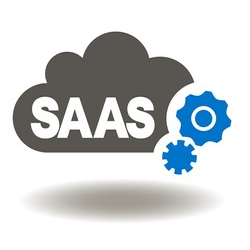

Le CaaS (Containers-as-a-Service) est un modèle de services de cloud computing qui permet aux utilisateurs de déployer et gérer des applications conteneurisées, dans le cloud ou dans des datacenters sur site.
Le FaaS (Function-as-a-Service) est un service Cloud lié au serverless computing et aux architectures servereless. Les développeurs de logiciels peuvent s’en servir pour déployer une fonction individuelle. La fonction démarre en quelques millisecondes et traite des requêtes individuelles, puis le processus s’achève.
les PaaS permettent de déployer une application sans avoir à se soucier des serveurs permettant de l’exécuter. Dans cette catégorie, on retrouve par exemple Microsoft Azure App Services et AWS Elastic Beanstalk.
La différence réside aussi au niveau du modèle de facturation. En général, les PaaS sont facturés par temps d’exécution du thread où est exécutée l’application de serveur. Dans le cas des FaaS, le prix dépend du temps d’exécution de la fonction.
L'utilisation de solutions logicielles en tant que service (SaaS) en entreprise permet un meilleur contrôle des charges techniques. L'ensemble des solutions techniques étant délocalisées le coût devient fixe, généralement fonction du nombre de personnes utilisant la solution SaaS. Le prix par utilisateur englobe le coût des licences des logiciels, de la maintenance et de l'infrastructure. Il revient à l'entreprise utilisatrice de faire son choix entre utilisation en SaaS, d'une part, et acquisition des licences puis déploiement en interne, d'autre part.
Un autre avantage pourrait être de réduire la consommation électrique en permettant la mutualisation des ressources sur des serveurs partagés par plusieurs entreprises (architecture multi-tenant) ainsi que l'usage d'un ordinateur à faible consommation muni d'un simple navigateur Web sans autres licences associées.La délocalisation des serveurs de la solution SaaS permet également un accès nomade aux données de l'entreprise. Cet accès entraîne un souci de sécurité de l'information lors du départ de collaborateurs. Il est indispensable d'avoir mis en place des procédures permettant, lors d'un départ, de supprimer l'habilitation de l'ancien collaborateur à accéder aux données de l'entreprise.
Le même service nécessite le fonctionnement de deux ordinateurs (client/prestataire) au lieu d'un seul. Cela peut augmenter la consommation électrique, notamment lorsque l'on utilise un poste client à forte consommation et un serveur non mutualisé.